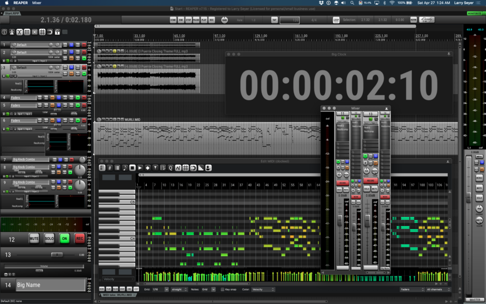
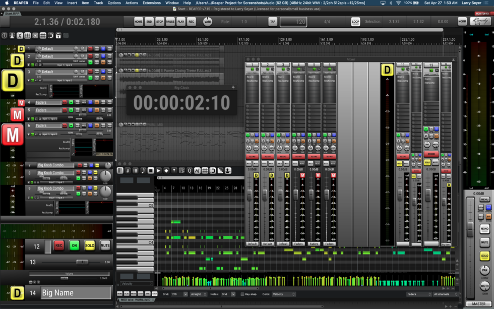

Released
iCandy
Dark theme for REAPER. A carefully crafted dark theme that reduces eye strain while maintaining visibility and usability.
The Problem
REAPER's default themes can be harsh on the eyes during long sessions. iCandy provides a carefully crafted dark theme that reduces eye strain while maintaining visibility and usability.
Key Features
- True dark color palette - Designed for comfortable extended use
- Optimized contrast ratios - Clear visibility without eye strain
- Custom icons and graphics - Cohesive visual experience throughout
- Easy installation - Get up and running in minutes
- Regular updates for REAPER versions - Stay current with the latest REAPER releases
Screenshots

